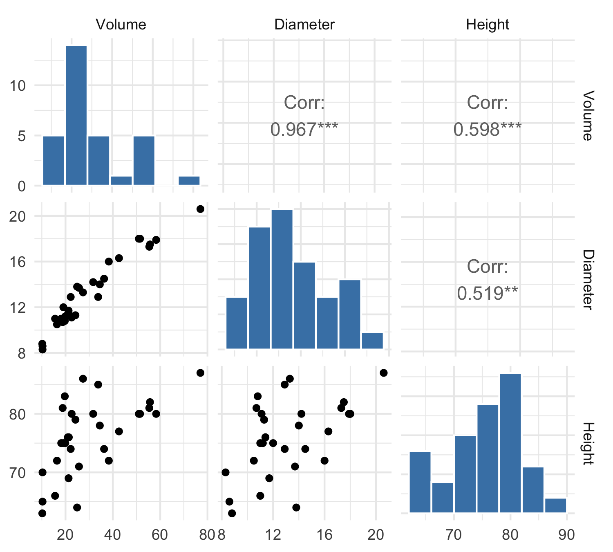

Linear Regression
Introduction to Statistical Learning - PISE
This unit will cover the following topics:
- Linear models
- The modeling process
Car data (diesel or gas)
We consider data for n = 203 models of cars in circulation in 1985 in the USA.
We want to predict the distance per unit of fuel as a function of the vehicle features.
We consider the following variables:
- The city distance per unit of fuel (km/L,
city.distance) - The engine size (L,
engine.size) - The number of cylinders (
n.cylinders) - The curb weight (kg,
curb.weight) - The fuel type (gasoline or diesel,
fuel).
- The city distance per unit of fuel (km/L,
The car dataset is available from the textbook (A&S) website:
- Dataset http://azzalini.stat.unipd.it/Book-DM/auto.dat
- Variable description http://azzalini.stat.unipd.it/Book-DM/auto.names
Simple linear regression

Let us consider the variables
city.distance(y),engine.size(x) andfuel(z).A simple linear regression Y = \beta_0 + \beta_1 X + \epsilon could be easily fit by least squares…
… but the plot suggests that the relationship between
city.distanceandengine.sizeis not well approximated by a linear function.… and also that
fuelhas a non-negligible effect on the response.
Multiple linear regression
Linear regression is a simple approach to supervised learning. It assumes that the dependence of Y on X_1,X_2,\ldots,X_p is linear.
Here our linear model is Y = \beta_0 + \beta_1X_1 + \beta_2 X_2 + \ldots + \beta_p X_p + \varepsilon
Given estimates \hat{\beta}_0,\hat{\beta}_1,\ldots,\hat{\beta}_p we can make predictions using the formula \hat{y} = \hat\beta_0 + \hat\beta_1 x_1 + \hat\beta_2 x_2 + \ldots + \hat\beta_p x_p
We estimate \beta_0,\beta_1,\ldots,\beta_p as the values that minimize the sum of squared residuals
\begin{aligned} \mathrm{RSS} &= \sum_{i=1}^{n} (y_i - \hat{y}_i)^2 \\ &= \sum_{i=1}^{n} \left( y_i - \hat{\beta}_0 - \hat{\beta}_1 x_{i1} - \hat{\beta}_2 x_{i2} - \cdots - \hat{\beta}_p x_{ip} \right)^2 \end{aligned}
This is done using standard statistical software. The values \hat{\beta}_0,\hat{\beta}_1,\ldots,\hat{\beta}_p that minimize RSS are the multiple least squares regression coefficient estimates.
Car data, a first model
Let us consider again the variables
city.distance(Y),engine.size(X) andfuel(Z).A first attempt is to consider a polynomial term combined with a dummy variable Y = \beta_0 + \beta_1 X + \beta_2 X^2 + \beta_3 X^3 + \beta_4 I(Z = \texttt{gas}) + \varepsilon, which is a special instance of linear model.
Indeed, by looking at the plot of the data, it is plausible that we need a polynomial of degree 3 or 4
It is also clear from the plot that
fuelis a relevant variable. Categorical variables are encoded using indicator variables: z_i = \begin{cases} 1 & \text{if the $i$th car is gas} \\ 0 & \text{if the $i$th car is diesel} \end{cases} Resulting model: \hat{y} = \begin{cases} \hat\beta_0 + \hat\beta_1 x + \hat\beta_2 x^2 + \hat\beta_3 x^3 + \hat\beta_4 & \text{if the car is gas} \\ \hat\beta_0 + \hat\beta_1 x + \hat\beta_2 x^2 + \hat\beta_3 x^3 & \text{if the car is diesel} \end{cases}To evaluate the goodness of fit, we can calculate the coefficient of determination: R^2 = 1 - \frac{\text{(``Residual deviance'')}}{\text{(``Total deviance'')}} = 1 - \frac{\sum_{i=1}^n (y_i - \hat{y}_i)^2}{\sum_{i=1}^n(y_i - \bar{y})^2}.
A first model: estimated coefficients
- We obtain the following summary for the regression coefficients \hat{\beta}.
| term | estimate | std.error | statistic | p.value |
|---|---|---|---|---|
(Intercept) |
28.045 | 3.076 | 9.119 | 0.000 |
engine.size |
-10.980 | 3.531 | -3.109 | 0.002 |
engine.size^2 |
2.098 | 1.271 | 1.651 | 0.100 |
engine.size^3 |
-0.131 | 0.139 | -0.939 | 0.349 |
fuel_gas |
-3.214 | 0.427 | -7.523 | 0.000 |
- Moreover, the coefficient R^2 and the residual standard deviation s are:
| r.squared | sigma | deviance |
|---|---|---|
| 0.5973454 | 1.790362 | 634.6687 |
A first model: fitted values

Linear models and non-linear patterns
- A significant advantage of linear models is that they can describe non-linear relationships via variable transformations such as polynomials, logarithms, etc.
- This gives the statistician a lot of modeling flexibility. For instance, we could let: \log{Y} = \beta_0 + \beta_1 \log{X} + \beta_2 I(Z = \texttt{gas}) + \epsilon
- This specification is linear in the parameters, it fixes the domain issues, and it imposes a monotone relationship between engine size and consumption.
| term | estimate | std.error | statistic | p.value |
|---|---|---|---|---|
(Intercept) |
3.060 | 0.047 | 64.865 | 0 |
log(engine.size) |
-0.682 | 0.040 | -17.129 | 0 |
fuel_gas |
-0.278 | 0.038 | -7.344 | 0 |
Second model: fitted values

A third model: additional variables
Let us consider two additional variables:
curb.weight(w) andn.cylinders(v).A richer model, therefore, could be: \log{Y} = \beta_0 + \beta_1 \log{x} + \beta_2 \log{w} + \beta_3 I(Z = \texttt{gas}) + \beta_4 I(V = 2) + \epsilon, for i=1,\dots,n. The estimates are:
| term | estimate | std.error | statistic | p.value |
|---|---|---|---|---|
(Intercept) |
9.423 | 0.482 | 19.549 | 0.000 |
log(engine.size) |
-0.180 | 0.051 | -3.504 | 0.001 |
log(curb.weight) |
-0.943 | 0.072 | -13.066 | 0.000 |
fuel_gas |
-0.353 | 0.022 | -15.934 | 0.000 |
cylinders2_TRUE |
-0.481 | 0.052 | -9.301 | 0.000 |
Train MSE
Required readings from the textbook and course materials
- Chapter 3: Linear Regression
- 3.1 Simple Linear Regression
- 3.1.1 Estimating the Coefficients
- 3.1.3 Assessing the Accuracy of the Model
- 3.2 Multiple Linear Regression
- 3.2.1 Estimating the Regression Coefficients
- 3.3 Other Considerations in the Regression Model
- 3.3.1 Qualitative Predictors
Video SL 3.1 Simple Linear Regression - 13:02
Video SL 3.3 Multiple Linear Regression - 15:38